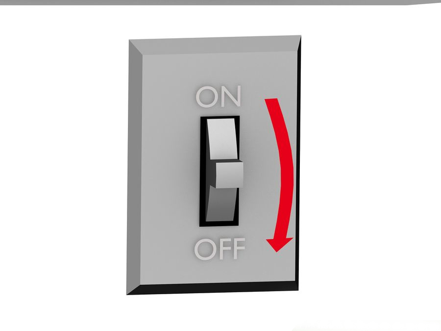

Turn off the lights.
Use the bottle opener to pop the bottom off the film canister, which should be very easy. While only touching the film negative from the edges, pull the film out of the canister. The film will be taped to the center film spool. Make sure you cut it off right at the base of the spool or you'll be cutting through your pictures. Also cut the tip off the film (the odd shaped piece that sticks out of the canister when you first buy the film) so that it's flat. You only need to cut about 1 inch (2.5 cm) off the tip.
